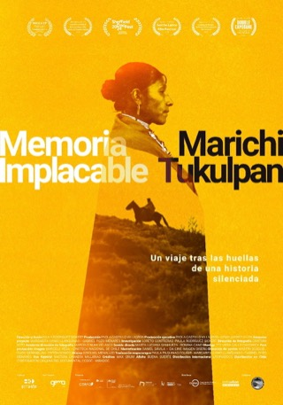

About the film

An indigenous Mapuche activist and researcher unveils a multitude of atrocities committed against her ancestors, whose story has been silenced for over a century. Committed to unearthing her ancestors' silenced history, Margarita embarks on a profound journey, guided by the diary of Katrulaf, an indigenous Mapuche prisoner of war. She retraces the Mapuches' deportation route, and in unearthing these pasts, gives voice to a displaced people and the genocide inflicted upon them during the military invasions that founded Argentina and Chile.
At the festival
- 2024 Sunday, November 10, 2024 · 11:00 AM · U.S. Naval Heritage CenterFollowed by post-screening discussion with director Paula Rodriguez Sickert, moderated by Dana Hedgpeth of The Washington Post.
More films on these topics
 Poppy CrashAndalusia Knoll Soloff2019 · 11 min
Poppy CrashAndalusia Knoll Soloff2019 · 11 min Cartel LandMatthew Heineman2015 · 100 min
Cartel LandMatthew Heineman2015 · 100 min- Short Strand: Minneapolis: On the Record + A Special ScreeningLaura Poitras, Rachel Lauren Mueller, Annie Sundberg2026
 No se ve desde acá (You Can't See It From Here)Enrique Pedráza-Botero2025 · 20 min
No se ve desde acá (You Can't See It From Here)Enrique Pedráza-Botero2025 · 20 min Status: VenezuelanMauricio Rodriguez-Pons2025 · 35 min
Status: VenezuelanMauricio Rodriguez-Pons2025 · 35 min Men of WarJen Gatien, Billy Corben2024 · 98 min
Men of WarJen Gatien, Billy Corben2024 · 98 min